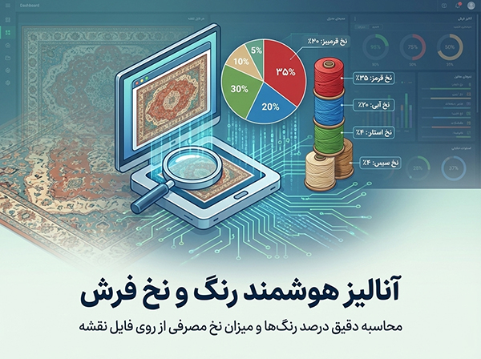
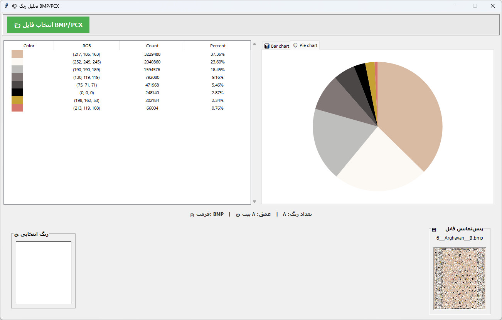
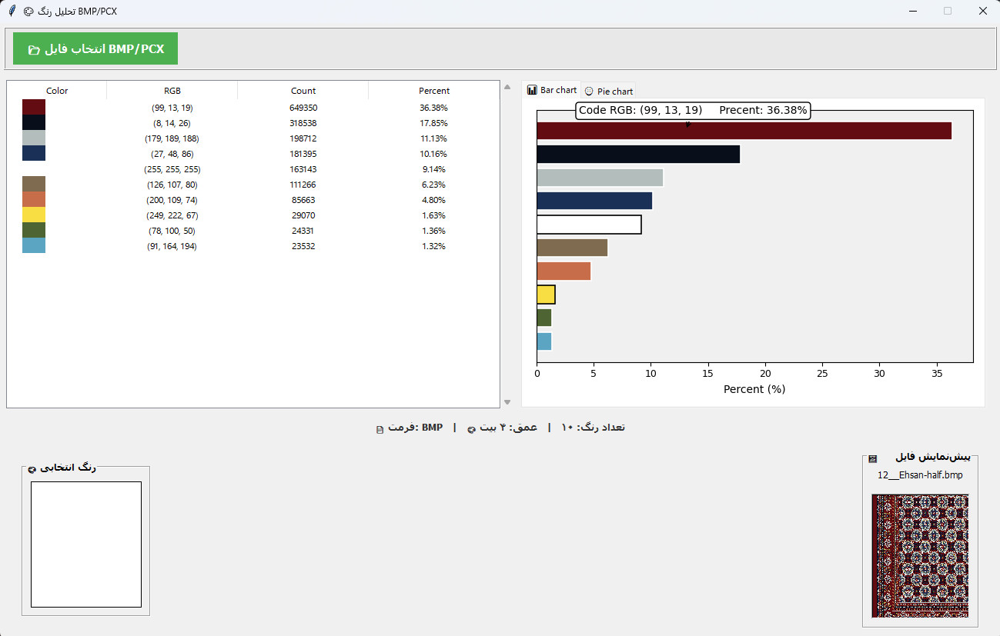

شما میتوانید با این برنامه کوچک میزان استفاده رنگ و نخ ها را در فرش آنالیز کنید. ابزاری دقیق برای محاسبه مصرف مواد اولیه.

برنامه آنالیز رنگ فرش یک ابزار تخصصی برای طراحان و تولیدکنندگان فرش ماشینی است. با استفاده از این نرمافزار، میتوانید به سرعت و با دقت بالا میزان درصد استفاده از هر رنگ را در طرح فرش خود محاسبه کنید.
این اطلاعات برای برآورد دقیق میزان نخ مصرفی و مدیریت موجودی انبار بسیار حیاتی است. رابط کاربری ساده و سرعت پردازش بالا از ویژگیهای اصلی این برنامه میباشد.
نمایش دقیق درصد مساحت پوشش داده شده توسط هر رنگ در نقشه فرش.
کمک به محاسبه میزان نخ مورد نیاز برای بافت بر اساس آنالیز رنگ.
قابلیت خواندن فایلهای تصویری استاندارد و فرمتهای تخصصی فرش.
پردازش سریع فایلهای حجیم و ارائه گزارش فوری.
آشنایی بیشتر با امکانات نرمافزار
نگاهی به رابط کاربری ساده و کاربردی برنامه آنالیز رنگ


همین حالا برنامه آنالیز رنگ فرش را دانلود کنید و محاسبات خود را دقیقتر کنید.